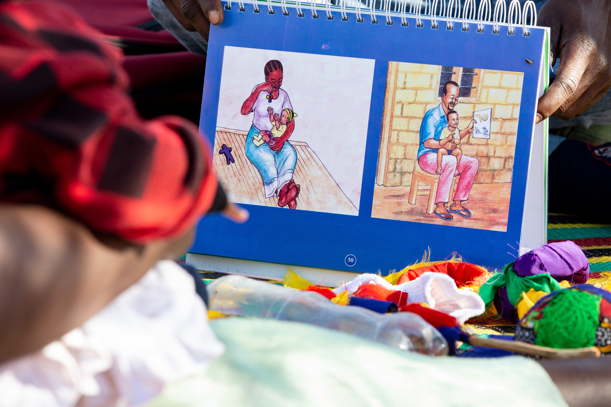

How the program came about
Poor developmental outcomes early in life can have a lasting impact and pass poverty and marginalisation from one generation to the next. A great deal is known about what helps children develop; far less is known about what works at scale, at what cost, and in what sequence — the questions governments actually face.
Kizazi Kijacho was launched in March 2021 to close that gap in Tanzania. Led by Bet Caeyers of Chr. Michelsen Institute and Ingvild Almås of the University of Zurich and Stockholm University, it brings together economists, epidemiologists and implementers from seven research institutes across four continents, working alongside a Tanzanian implementation team and the National Multisectoral Early Childhood Development Programme.
Where we are heading
We have completed a randomised controlled trial in Dodoma region and its data are being analysed. The households will continue to be followed, and further lab experiments and a follow-up at school entry are being prepared. A nationally representative longitudinal study is also planned. The program is led from the University of Zurich, in continued collaboration with the Institute for International Economic Studies at Stockholm University (IIES).
The aim over the coming years is to turn the evidence into something usable: cost estimates per child, guidance on delivery through existing health and community structures, and measurement tools that governments can run themselves.
Timeline
2021
Program launched at IIES, Stockholm University. Study design and instrument development.
2022
Cluster-randomised trial launched in Dodoma. Baseline survey across 390 villages.
2023 — 2024
Parenting and cash transfer intervention delivery, lab-in-the-field experiments, endline data collection for the Dodoma trial.
2025 —
Analysis, publication and dissemination. Launch of the nationally representative longitudinal study. Program hosted at the University of Zurich.
Funded by the State Secretariat for Education, Research and Innovation (SERI), the European Research Council (ERC), the Swedish Research Council, the Foreign, Commonwealth & Development Office (via Oxford Policy Management), the Conrad N. Hilton Foundation, the Swiss National Science Foundation, and the Research Council of Norway.